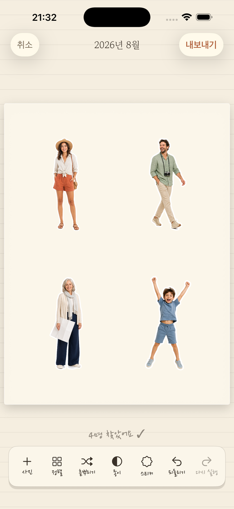
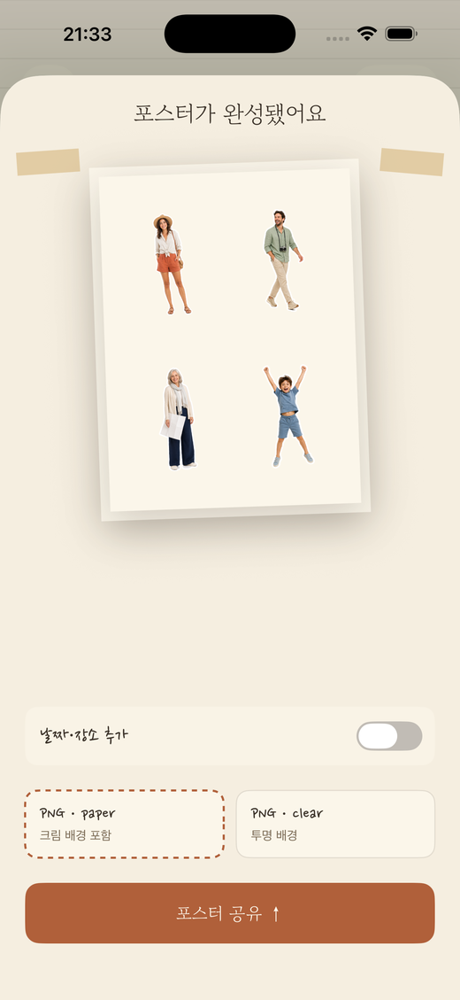
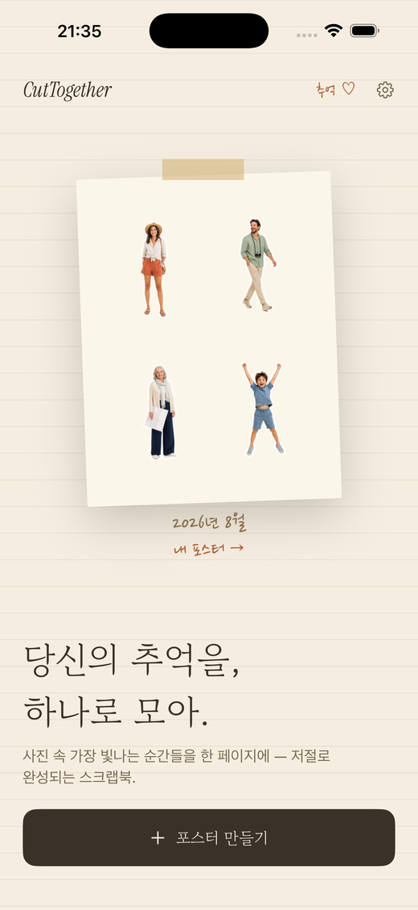

온디바이스 스크랩북 포스터
사진은 400장.
남는 건 사람.
고른 사진에서 인물을 전부 찾아 스티커처럼 오려내고, 한 장의 스크랩북 포스터에 올려줍니다. 오리는 건 자동으로, 여행은 그대로.
곧 만나요App StoreiPHONE & iPAD · 계정 없음 · 사진은 기기 밖으로 나가지 않음
자동 누끼
다이컷 스티커 테두리
마스킹테이프
PNG 내보내기


2026년 8월
이렇게 만들어요
카메라 롤에서 한 페이지까지, 세 단계.
고르기
사진 최대 20장
사진 선택 화면에서 바로. 앨범을 만들 필요도, 태그를 달 필요도 없습니다.
오리기
인물이 전부 오려져요
Apple Vision 프레임워크가 기기 안에서 사람을 찾아 배경에서 떼어냅니다. 한 장에 여러 명이어도 각각.
배치
포스터가 알아서 완성
스티커가 한 장씩 종이에 내려앉습니다. 옮기고 키우고 돌리고 흩뿌려 마음에 들면 PNG로 저장.
화면
사진 편집기가 아니라, 스크랩북 한 장.



프라이버시
사진은 이 기기를 떠나지 않습니다.
서버가 없습니다. 로그인도, 서드파티 SDK도 없습니다. 사진 분석·배경 제거·렌더링이 전부 iPhone 안에서 이루어지고, 앱이 볼 수 있는 사진은 시스템 선택 화면에서 직접 건네준 것뿐입니다.
디테일
작은 앱. 분명한 선택.
사진은 기기 밖으로 안 나갑니다
인물 검출과 배경 제거 모두 기기 안에서. 업로드도, 계정도, 분석 도구도 없습니다.
다이컷 스티커 테두리
흰색·크림·잉크·테라코타 중에서 누끼 외곽선을 고르거나, 아예 없이.
종이 4종
화이트·크림·잉크·크라프트, 그리고 어디든 붙일 수 있는 투명 배경 내보내기.
날짜는 사진에서
손글씨 캡션의 날짜를 사진의 촬영 정보에서 바로 읽어옵니다.
포스터 보관함
공유한 포스터는 전부 보관돼요. 다시 공유하거나 지우면 됩니다.
4개 언어
English, 한국어, 日本語, 繁體中文 — 언어마다 어울리는 제목·손글씨 폰트까지.
폴더 말고, 사람을 남기세요.
iPhone과 iPad에 곧 출시됩니다.
곧 만나요App Store